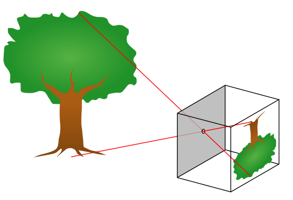
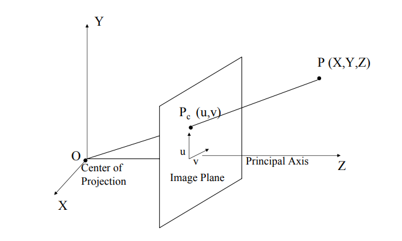
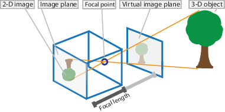
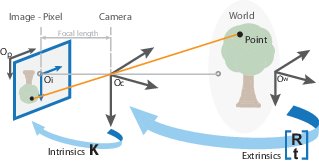
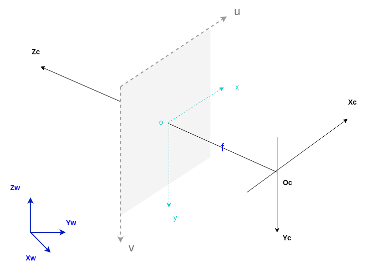
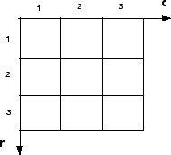
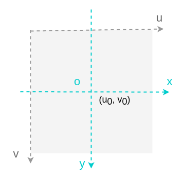
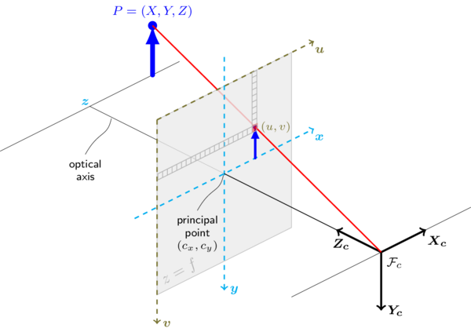

03-相机模型¶
在图像测量过程以及机器视觉应用中，为确定空间物体表面某点的三维几何位置与其在图像中对应点之间的相互关系，必须建立相机成像的几何模型，这些几何模型参数就是相机参数。
标定的目标：求出相机的内、外参数，以及畸变参数。
为什么需要标定：
无论是在图像测量或者机器视觉应用中，相机参数的标定都是非常关键的环节，其标定结果的精度及算法的稳定性直接影响相机工作产生结果的准确性。因此，做好相机标定，提高标定精度是做好后续工作的前提和重点。
小孔成像模型¶
（图1） 小孔成像原理示意图

上图是最原汁原味的小孔成像原理图，它描述的是三维空间中的点到图像平面(image plane)上的投影。
思考: 三维空间中的每个点，都在图像平面上有一个唯一对应的投影吗？
在实际的实现和应用中，为了表达的方便，通常会将图像平面放在小孔和三维场景之间。如下图所示，（这是大家在很多教科书，播客，专业书籍上能看到的图）
（图2） 小孔成像原理的一个实际实现的描述

（图3） 对图2的一些直观补充
 
这里介绍几个概念：
- 光轴：像极坐标系的Z轴
- 光心：光轴中心点，即上图中的O点
- 主点：光轴与图像平面的交点Principal Point
- 焦距：光心到图像平面的距离Focal Length
四个坐标系¶
为了数学表达的方便，通常以光心为原点，建立一个图像坐标系。下图详细的描述了这些关系。

- 世界坐标系：O_w - X_wY_wZ_w 单位m
世界坐标系（world coordinate），也称为测量坐标系，是一个三维直角坐标系，以其为基准可以描述相机和待测物体的空间位置。世界坐标系的位置可以根据实际情况自由确定。
- 相机坐标系：O_c - X_cY_cZ_c 单位m
相机坐标系（camera coordinate），也是一个三维直角坐标系，原点位于镜头光心处，x、y轴分别与相面的两边平行，z轴为镜头光轴，与像平面垂直。
- 像素坐标系：o_{uv}-uv 单位像素pixel（整数）
像素坐标系（pixel coordinate），二维直角坐标系，反映了相机CCD/CMOS芯片中像素的排列情况。原点o_{uv}位于图像的左上角，u轴、v轴分别于像面的两边平行。像素坐标系中坐标轴的单位是像素pixel（整数）
几乎所有的图像，像素坐标都如下图所示，  即：像素原点在图像的左上角，横坐标值表示列数c，通常以u表示；纵坐标值表示行数r，通常以v表示。
- 图像坐标系：o_{xy} - xy 单位mm
图像坐标系（image coordinate），由于像素坐标系不利于坐标变换，因此需要建立图像坐标系o_{xy}，其坐标轴的单位为毫米（mm），原点是相机光轴与相面的交点（称为主点Principal Point），即图像的中心点，x轴、y轴分别与u轴、v轴平行。故两个坐标系实际是平移关系，即可以通过平移就可得到。
如下图：(u_0,v_0) 为图像坐标系中心O在像素坐标系下的位置表示。

点在各个坐标系的表达：
